⚡ First turbocharged Civic.
In 2016, Honda introduced the first turbocharged Civic in the 10th-generation lineup, featuring a 1.5L turbo engine for improved performance and efficiency.
🛡️ Added Honda Sensing safety features.
Honda Sensing, introduced in 2016, brought advanced safety features like collision mitigation braking, lane-keeping assist, and adaptive cruise control.
🏆 2016 Type R set Nürburgring record.
The 2016 Civic Type R (FK2) set a record at the Nürburgring for the fastest front-wheel-drive production car, proving Honda’s engineering excellence.
🚀 2023 Civic Type R has 315 hp.
The latest 2023 Civic Type R (FL5) boasts 315 hp from its 2.0L turbocharged engine, making it the most powerful Civic ever.
📟 2022 Civic has a fully digital dashboard.
The 11th-gen Civic, released in 2022, introduced a sleek, fully digitlly instrument cluster for a modern and futuristic driving experience.
🏎️ Max Speed: 180 mph (290 km/h).
The 2023 Civic Type R can reach a top speed of 180 mph (290 km/h), making it one of the fastest Civics ever built.
🛞 Civic Hatchback returned to the U.S. in 2017.
After years of absence, Honda brought back the Civic Hatchback to the U.S. market in 2017, offering a sportier and more practical alternative.


 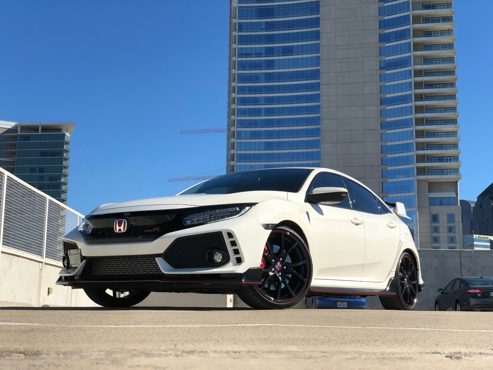
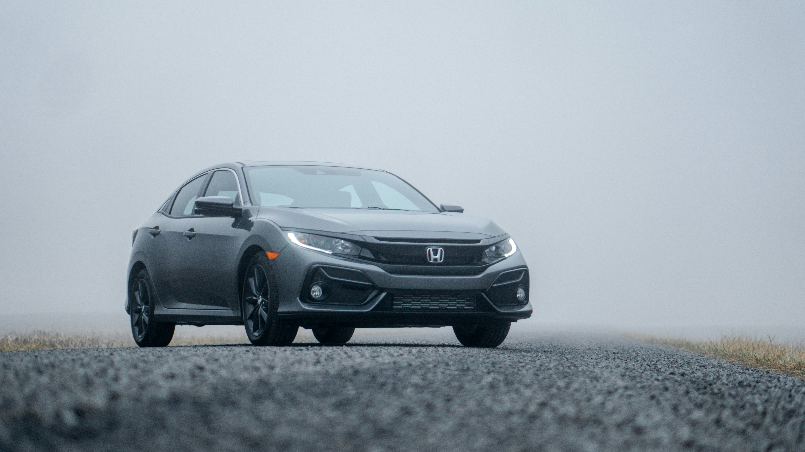
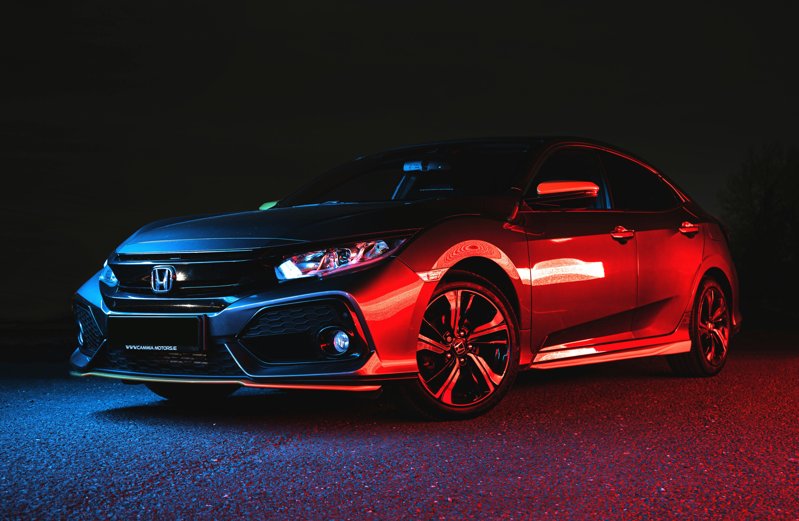
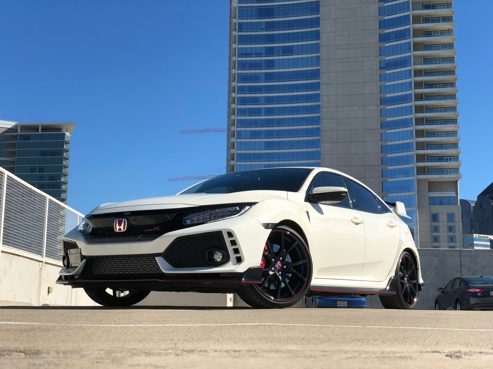
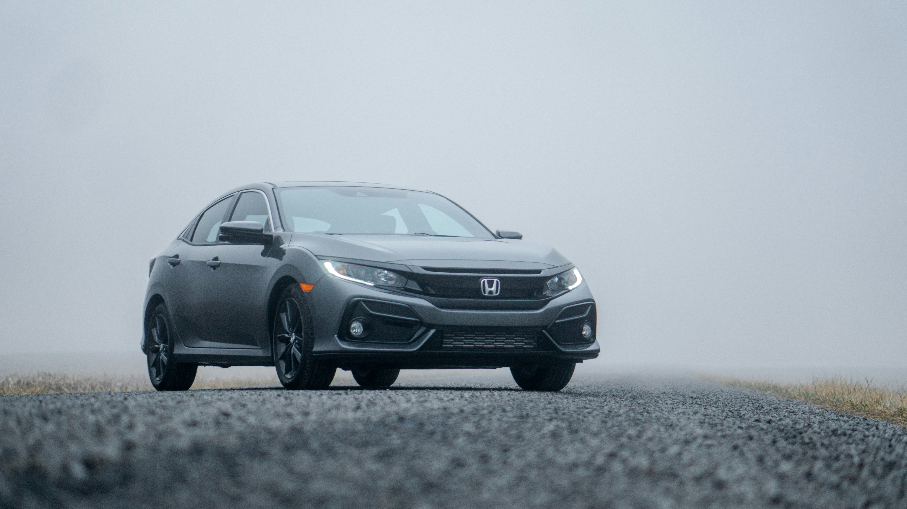
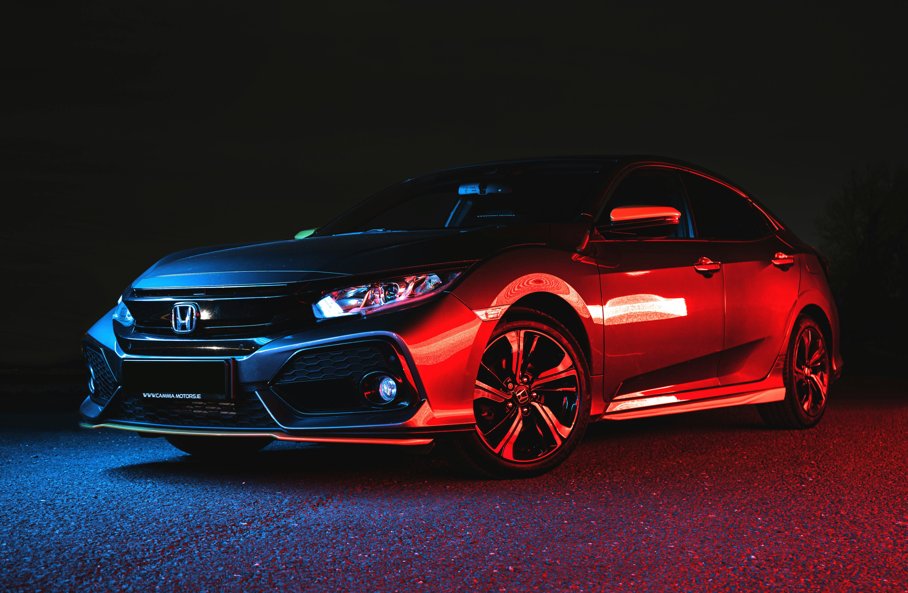

 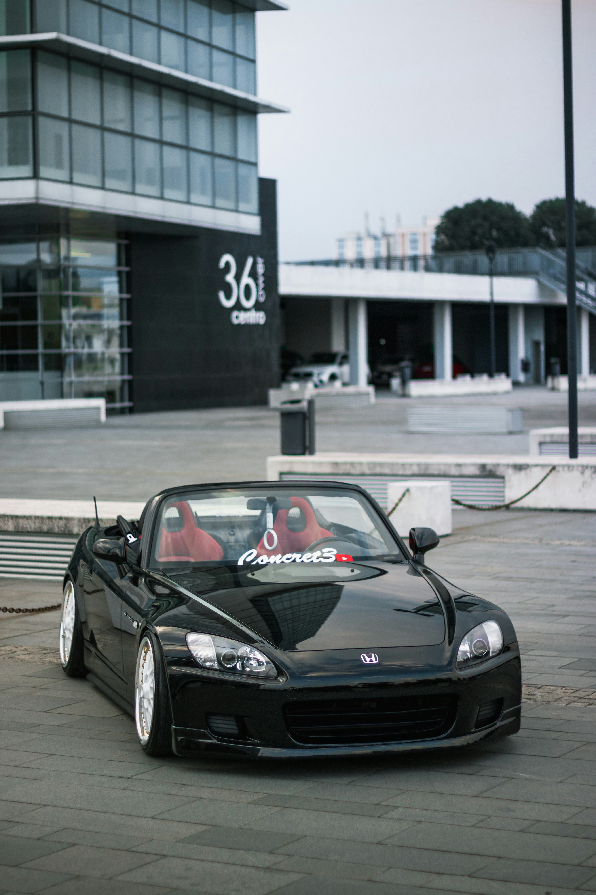
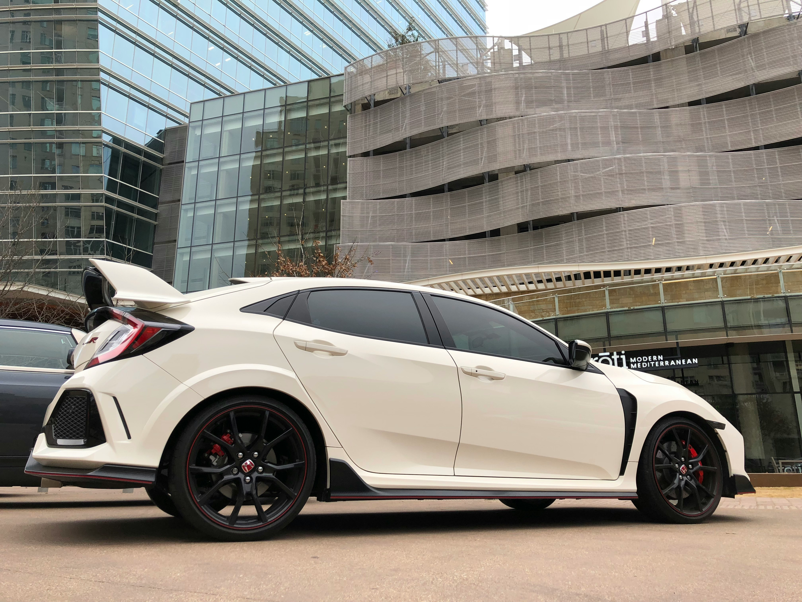
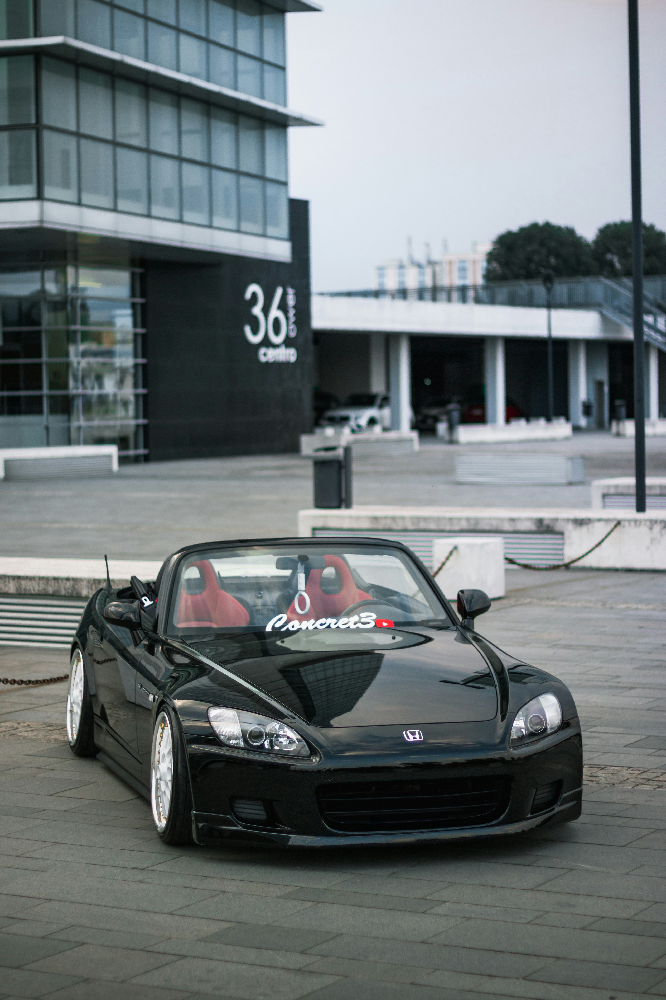
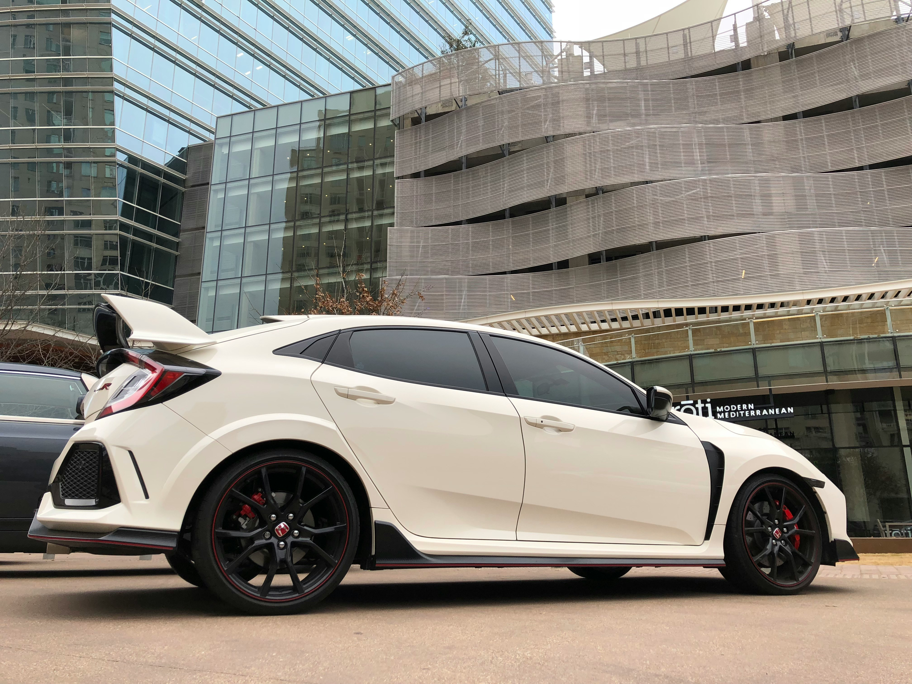
 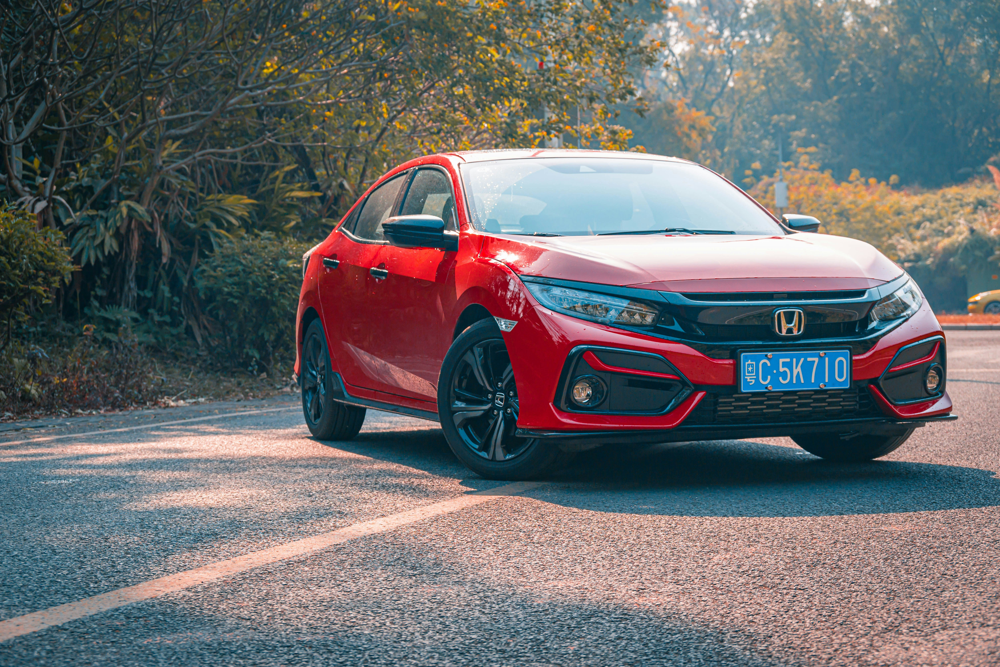
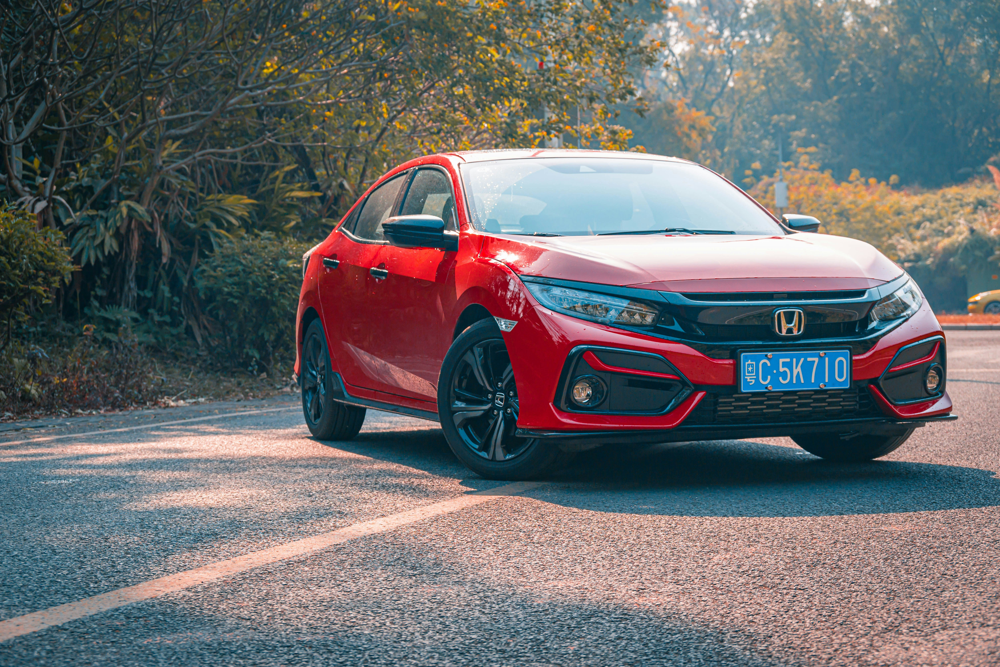